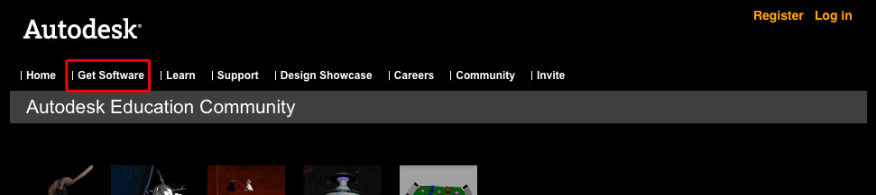

You are here: Home → Getting Maya
Getting Maya 2012
Welcome to UCBUGG! If you already have Maya installed on your computer, head over to the next section Introduction to Maya.
While UCBUGG provides lab computer with Maya installed, it's really important to have your own copy on your computer so that you can work from home on your own schedule.
This process will require that you have a valid berkeley.edu email address, so make sure you have it handy.
Registering with Autodesk
Open up a web broswer and go to http://students.autodesk.com/. On the top menu bar, click the "Get Software" menu item.

This link will take you to a registration page. Make sure to fill out the "School Email" field with your berkeley.edu email address or this process will not work. You don't need to fill out the "Student Group" and "Student ID" fields. Once you have filled out the form, hit "Submit"
Autodesk will register your account and send you an activation email. Registration can take a few minutes, so don't worry if the email doesn't show up instantly. Once you get your email, click on the included activation link. You should see a "Registration Complete" message.

Downloading Maya
Once registration is complete, go back to http://students.autodesk.com/, log in with your newly created account, and again click on the "Get Software" menu item. Scroll down the page until you see "Autodesk Maya". It is listed under "Other Products". Click on the Autodesk Maya button.
From the drop-down menu, select which version you want to download. If you are on Windows, download either the 32-bit or 64-bit version, depending on your computer's processor. If you are on a Mac, just download the Mac OS X version.
Once you select your version, you will be taken to the download page. The download should start automatically, but if not, there is a link at the bottom of the page that will manually start the download. Make sure to write down your serial number and product, as you will need them during installation. Maya is a pretty big piece of software (1.2 GB) so make sure you have enough time to download the entire file. I suggest catching up on some reading while you wait.
Installing Maya
Once your download is complete, simply run the installer and follow the on screen instructions. The installer will ask for the serial number from the previous section. After you enter your serial number and product key, Maya will install. You are now the proud owner of Maya 2012.
A warning: Maya's activation process can take quite a while. If you encounter any errors, simply try again with the same data. It should eventually work.